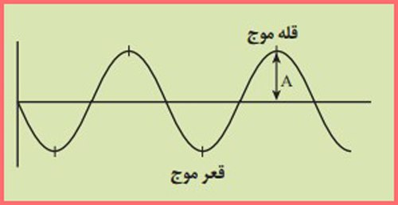

با هم بیندیشیم صفحه 60
⚫️ علت حرکت ورقههای سنگ کره چیست؟
پاسخ: حرکت ورقههای سنگکره به دلیل فرآیندهای درون زمین، بهویژه حرارت و جریانهای همرفتی در گوشته است. این جریانها باعث میشوند که مواد داغ از قسمتهای عمیقتر به سمت سطح بیایند و مواد سردتر به عمق بروند. این حرکت همرفتی در گوشته، فشارهایی به ورقههای سنگکره وارد میکند و آنها را به حرکت در میآورد. همچنین، برخورد و کشش بین ورقهها میتواند موجب حرکت آنها شود. بهطور کلی، انرژی حرارتی داخل زمین عامل اصلی حرکت ورقههاست.
⚫️ پیامدهای حاصل از حرکت ورقهها را ذکر کنید.
پاسخ:حرکت ورقههای سنگکره پیامدهای مختلفی دارد که شامل موارد زیر میشود: تشکیل کوهها: زمانی که ورقههای سنگکره به هم برخورد میکنند، این برخورد میتواند منجر به ایجاد کوهها شود. مثلاً برخورد ورقههای هند و اوراسیا باعث تشکیل رشتهکوه هیمالیا شده است. زلزلهها: حرکت ورقهها میتواند تنشهایی در مرزهای ورقهها ایجاد کند که در نهایت منجر به وقوع زلزلهها میشود. این زلزلهها عمدتاً در نواحی مرزی ورقهها رخ میدهند. آتشفشانها: در محلهایی که یک ورقه به زیر ورقه دیگر میرود (فرورانش)، مواد مذاب از داخل زمین به سطح آمده و آتشفشانها را به وجود میآورد. شکافها و درهها: زمانی که ورقهها از هم دور میشوند، میتوانند شکافها یا درههای عمیق ایجاد کنند. مثل دره ریفت آفریقا که در آن ورقهها در حال جدا شدن از یکدیگر هستند. تشکیل اقیانوسها: در مناطقی که ورقهها از هم جدا میشوند، فضای خالی بین آنها با آب پر شده و دریاچهها و اقیانوسها شکل میگیرند. این پیامدها نشاندهنده تأثیرات مستقیم حرکت ورقهها بر سطح زمین هستند.
⚫️ علت فرورانش ورقه اقیانوسی چیست؟
پاسخ: ورقههای اقیانوسی به دلیل سنگینتر بودن نسبت به ورقههای قارهای، در برخورد با ورقههای قارهای یا دیگر ورقههای اقیانوسی، به داخل گوشته زمین فرو میروند. این فرآیند بهنام “فرورانش” شناخته میشود. دلیل این فرورانش، تفاوت چگالی (وزن واحد حجم) بین ورقهها است. ورقههای اقیانوسی معمولاً از سنگهای بازیک (مثل بازالت) ساخته شدهاند که چگالی بیشتری دارند و همین امر باعث میشود که هنگام برخورد با ورقههای قارهای، به زیر آنها فرو بروند.
⚫️ چرا با وجود گسترش بستر اقیانوسها، وسعت سطح زمین افزایش نمییابد؟
پاسخ:با وجود گسترش بستر اقیانوسها، وسعت سطح زمین افزایش نمییابد چون حرکت ورقههای سنگکره همیشه بهطور همزمان در برخی مناطق باعث گسترش بستر اقیانوسها و در برخی دیگر باعث فرورانش و بازگشت مواد به لایههای زیرین زمین میشود. این فرآیند بهطور مداوم در حال تعادل است. در مناطقی که بستر اقیانوسها گسترش مییابد (مثل مرکز اقیانوسها که ورقهها از هم دور میشوند)، در مناطق دیگری مانند مناطق فرورانش (مرزهایی که ورقهها به زیر هم میروند) مواد به لایههای زیرین زمین باز میگردند. بنابراین، در نهایت، هیچ افزایشی در مساحت کلی سطح زمین رخ نمیدهد. این فرآیندهای گسترش و فرورانش باعث میشوند که سطح زمین بهطور تعادلی ثابت بماند.
⚫️ نتیجه فرورانش ورقه اقیانوسی ـ قاره ای و اقیانوسی ـ اقیانوسی چیست؟
پاسخ: فرورانش ورقه اقیانوسی-قارهای: تشکیل آتشفشانها و کوهها. اقیانوسی-اقیانوسی: آتشفشانهای زیرآبی و دریاچههای عمیق.
فکر کنید صفحه 64
⚫️ نوع گسل ها را مشخص کنید
پاسخ:الف:گسل رانده یا معکوس
ب:گسل عادی یا نرمال
بیندیشید صفحه 68
⚫️ محدوده کمربند لرزه خیز آلپ ـ هیمالیا را مشخص کنید
پاسخ: این محدوده شامل رشته کوه آلب در اروپا، کوههای ترکیه، رشته کوههای – البرز و زاگرس ایران، رشته کوه هندوکش، رشته کوه هیمالیا تا مناطق جنوب شرقی آسیا می باشد.
⚫️ دو تصویر روبهرو را باهم مقایسه کنید. چه نتیجه ای میگیرید؟
پاسخ:محلهای وقوع زمین لرزه (در بیش از ٣٠٠٠٠ نقطە لرزە خیز جهان) دقیقا منطبق بر مرز ورقهها است و الگوی مشخصی در اطراف اقیانوس آرام و کمربند آلپ هیمالیا دارد. در نتیجه، زمین لرزهها بیشتر در مرز ورقههای سنگکره رخ میدهند.
گفت و گو کنید صفحه 69
⚫️ کدام یک از فعالیت های انسانی زیر می تواند باعث وقوع زمین لرزه شود؟
انفجار معدن – تخلیه ناگهانی آب پشت سد – شخم زدن زمین – انفجارهای اتمی – آتش سوزی جنگل
پاسخ: انفجار معدن – انفجارهای اتمی
فکر کنید صفحه 69
⚫️ عمق کانون چه تأثیری بر روی میزان خسارت و خرابی زمین لرزه دارد؟
پاسخ:هر چه عمق کانونی زمین لرزه بیش تر باشد یعنی امواج مجبور به پیمودن مسیر طولانی تر برای رسیدن به سطح باشند، تخریب و خسارت کاهش مییابد.
جمع آوری اطلاعات صفحه 69
⚫️ اگر در یک محیط کشسان، ارتعاشی به وجود آید که باعث به وجود آمدن ارتعاشهای پیدرپی شود، یک موج مکانیکی همانند امواج زمین لرزه ایجاد می گردد. به برآمدگی های موج، قله و به فرورفتگیهای آن، قعر موج گفته میشود. نصف فاصله قله تا قعر، دامنه موج (A) نامیده می شود.در مورد دامنه موج (A) در امواج لرزهای و اهمیت آن در لرزه نگاشتها مطالبی جمع آوری کنید.

پاسخ: دامنه موج (A) در امواج لرزهای و اهمیت آن در لرزهنگاشتها:
تعریف دامنه موج (A):
دامنه موج، نصف فاصله بین قله و قعر موج است و نشاندهنده میزان انرژی موج است. در امواج لرزهای، دامنه موج با شدت زلزله و انرژی آزاد شده از گسل مرتبط است.
اهمیت در لرزهنگاشتها:
در لرزهنگاشتها، دامنه موج ثبت میشود و از آن برای تعیین بزرگی زلزله استفاده میشود. هرچه دامنه موج بیشتر باشد، انرژی آزاد شده نیز بیشتر است.
دامنه موج در لرزهنگاشتها به شناسایی نوع موج (مانند موج اولیه یا P و موج ثانویه یا S) کمک میکند.
مقایسه دامنههای ثبتشده در ایستگاههای مختلف به زمینشناسان اجازه میدهد مرکز زلزله (کانون) و عمق آن را تعیین کنند.
رابطه دامنه با فاصله از مرکز زلزله:
دامنه موج با افزایش فاصله از کانون زلزله کاهش مییابد. این کاهش به دلیل اتلاف انرژی موج در طول مسیر است.
بنابراین، دامنه موج نهتنها نشاندهنده شدت زلزله است، بلکه اطلاعات دقیقی درباره موقعیت، بزرگی، و انرژی زلزله فراهم میکند.
پیوند با ریاضی صفحه 72
⚫️ مقدار انرژی آزاد شده و دامنه امواج زمین لرزه ای با بزرگی ۶ ریشتر، چند برابر زمین لرزهای با بزرگی ۴ ریشتر است؟
پاسخ:بزرگی زمینلرزه در مقیاس ریشتر به صورت لگاریتمی است، به این معنا که هر افزایش یک واحدی در بزرگی، نشاندهنده افزایش ۱۰ برابری در دامنه امواج و حدود ۳۲ برابر در انرژی آزاد شده است. دامنه امواج: زمینلرزه با بزرگی ۶ ریشتر نسبت به ۴ ریشتر: ۱۰۶-۴ = ۱۰۲ = ۱۰۰ یعنی دامنه امواج ۱۰۰ برابر بیشتر است. انرژی آزاد شده: انرژی آزاد شده به صورت تقریبی با ضریب ۳۲ برای هر واحد افزایش محاسبه میشود: ۳۱.۶۶-۴ = ۳۱.۶۲ = ۹۹۸.۵۶ یعنی انرژی آزاد شده ۹۹۸.۵۶ برابر بیشتر است. نتیجه: زمینلرزهای با بزرگی ۶ ریشتر، ۱۰۰ برابر دامنه بزرگتر و ۹۹۸.۵۶ برابر انرژی بیشتر نسبت به زمینلرزهای با بزرگی ۴ ریشتر دارد.
فکر کنید صفحه 72
⚫️ بزرگی و شدت زمین لرزه بم را در شهرهای بم و تهران باهم مقایسه کنید.
پاسخ:بزرگی زمینلرزه: بزرگی زلزله (ریشتر) یک مقدار ثابت است و در همه نقاط یکسان اندازهگیری میشود. بنابراین بزرگی زمینلرزه بم در بم و تهران یکسان بوده و حدود ۶.۶ ریشتر ثبت شده است. شدت زمینلرزه: شدت زلزله به محل وقوع و تأثیر آن در هر منطقه بستگی دارد. شدت زلزله در شهر بم بسیار بالا و ویرانگر بود (تا درجه ۱۰ یا بیشتر در مقیاس مرکالی)، اما در تهران به دلیل فاصله زیاد از کانون زلزله، شدت بسیار کمتر احساس شد و خسارت خاصی ایجاد نکرد.
⚫️ چه ایرادی به مقیاس شدت زمین لرزه وارد است؟
پاسخ:وابستگی به عوامل انسانی: شدت زلزله به احساس انسانها و میزان خسارت در یک منطقه بستگی دارد، که ممکن است برای هر منطقه متفاوت باشد و اطلاعات دقیقی از انرژی زلزله ارائه ندهد. وابستگی به فاصله از کانون زلزله: شدت زلزله با افزایش فاصله از کانون کاهش مییابد، بنابراین شدت نمیتواند اطلاعات جهانی و دقیقی درباره زلزله ارائه دهد. شرایط محیطی: نوع خاک، ساختمانها، و جمعیت منطقه بر شدت زلزله تأثیر میگذارد، که ممکن است باعث نتایج متناقض در مناطق مختلف شود.